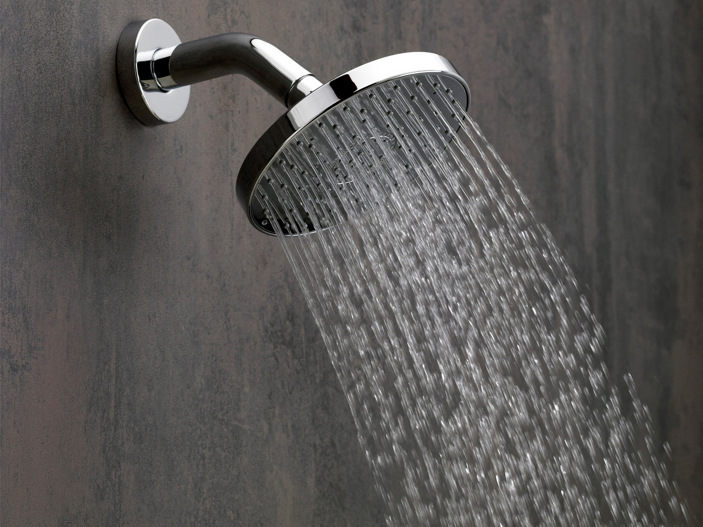
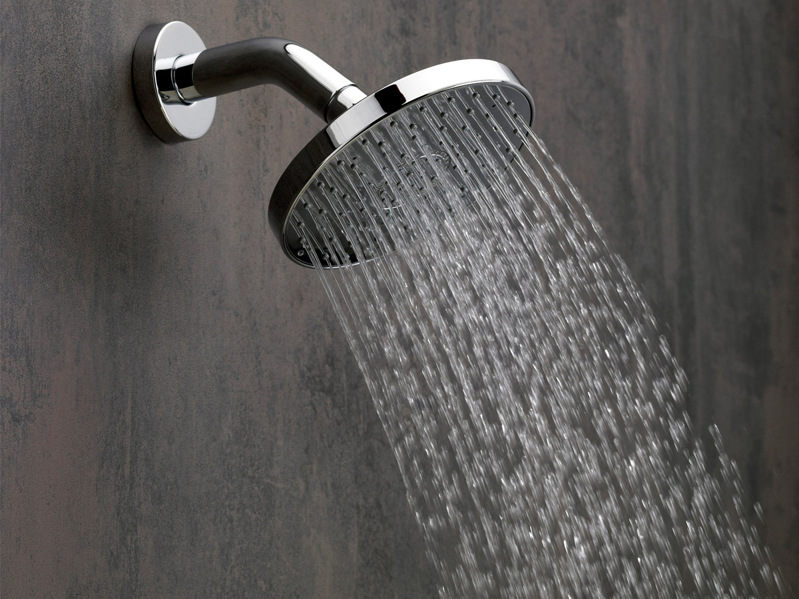

7 things you should do after every workout

 

Cool down
As soon as you drop the dumbbell on your last set, or finish your last mile on the track or treadmill, you don’t want to stop completely — you need to cool down. There are a myriad of ways to bring your heart rate down: Engage in some yoga poses and stretching, if you wish, but many people opt to jog lightly, walk, or even jump in the pool for a couple laps. It’s really up to you — just make sure you’re taking ten or fifteen minutes to properly bring your workout to a close.
Stretch
Going right from the cool-down phase and into stretching is often advised by many trainers — and sometimes they are one in the same. If you don’t feel like hopping on the treadmill for ten minutes (perhaps you just hopped off the treadmill), a targeted stretching routine may be just what you need. Stretching can reduce lactic acid build up, and will help you build flexibility and mobility at the same time.
Use a foam roll
A lot of you may not be familiar with foam rolling, but once you try it, it tends to stick with you. For the uninitiated, a lot of fitness buffs suggest using a roll, made of foam, and basically rolling around on it, on the floor. What this does is work out any ‘kinks’ or knots that you may have, and help soothe fatigued muscles after a workout. Hell, you can even do this before a workout to help warm up too. Foam rolls may seem a bit unorthodox at first, but giving them a shot may do wonders for your recovery time.
Drink water
This one is pretty obvious, but some people seem reluctant to do it. Just drink water! Rehydration may be the most important element of any post-workout routine, and you’re sure as hell not going to recover if you’re dehydrated. After sweating out a ton of your body’s resources and water reserves, your body simply needs to be replenished. So bring a water bottle, and make sure you’re downing enough to stay hydrated.
Track your progress
It’s literally never been easier to track your fitness routine and diet regimen. There are a ton of apps for smartphones out there, as well as devices like FitBit, and even new things hitting the market like the Apple Watch and other smart watches that can help you out. Or, if you prefer, you can still stick to the traditional pen and paper, or even use a spreadsheet program, like Microsoft Excel, or Google Docs. The key here is to just make sure you know what exercises you’re doing, and to track your improvement. If you’re not adding more weight to your routine, or running for longer periods of time, you’ll notice — and be able to make the proper adjustments. But be sure to do it while you’re still at the gym, as you might forget, or just say ‘screw it’ later on.
Fuel up
In the same vein as rehydration, your body will literally be aching for sustenance. You need to answer the call. One of the most popular post-workout indulgences is, of course, the protein shake. Lots of experts recommend getting a solid dose of protein soon after working out, to help kick-off the muscle rebuilding process after they’ve been thoroughly fatigued. Typically, at least 20 grams is recommended, which can easily be found in most protein powders. You can also go for certain foods, like Greek yogurt, low-fat cottage cheese, or even beef jerky to get your protein fix. The goal is to give your muscles something to ‘chew on’ as they rebuild themselves, and get bigger in preparation for your next bout in the gym.
Shower and change
Even more obvious than drinking water is to use some to spray yourself off. Making sure that you take a shower and put on a fresh set of clothes can make a huge difference — for your health, and for those that need to be around you for the rest of the day. Not only can you end up smelling, there’s a chance that certain…. things… can end up growing on, or around you. Especially your workout clothes — wash those suckers. It’s simple hygiene, really. After you’ve cooled down, had some water, and have had a chance to stop sweating, hit the showers.